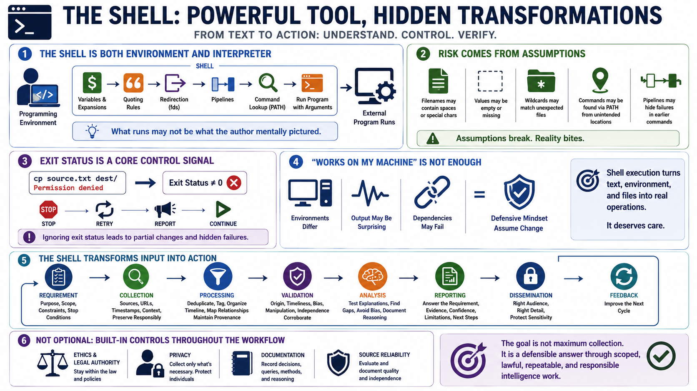

Understanding Shell Execution Risk
Connecting to LMS... Progress: in progress

Narration
The shell is both a programming environment and a command interpreter. Before an external program runs, the shell evaluates variables, performs expansions, applies quoting rules, handles redirection, builds pipelines, locates commands, and passes arguments. Defensive programmers pay attention to that transformation step because the command that runs may not be the command the author mentally pictured.
Risk often appears when scripts assume that input, filenames, paths, environment settings, or command output are simpler than they really are. A filename may contain spaces. A value may be empty. A wildcard may match unexpected files. A command may be found through PATH from a location the script did not intend. A pipeline may hide a failure in an earlier command if the script only checks the last status.
Exit status is a core control signal. Shell automation frequently decides whether to continue, stop, retry, or report success based on command results. If the script ignores those results, it can move forward after a failed copy, missing file, denied permission, or unavailable service. That can create partial changes that are harder to understand than an early, clear failure.
Works on my machine is not enough for shell automation because production environments differ. The safer mindset is to assume the environment may change, the command output may be surprising, and dependencies may fail. Shell execution deserves care because it turns text, environment, and files into operations on real systems.